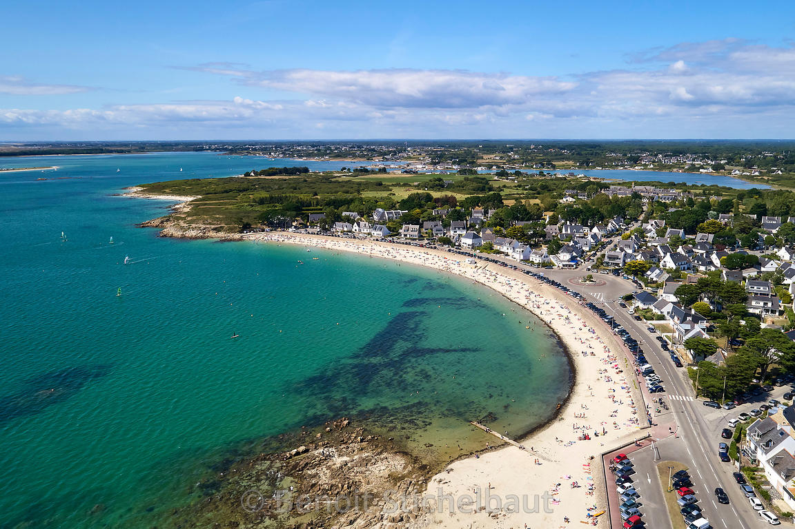

Perfectly sheltered between the Gulf of Morbihan and the Bay of Quiberon, the five beaches of Carnac are appreciated by the whole family for their fine sand, their gentle slopes, their vivifying and limpid waters.
Sandcastles, swimming, fishing, water sports, idleness, the beaches of Carnac offer a range of activities to recharge your batteries in the heart of Morbihan. Shady, family, intimate, they each have their own personality ... it's up to you!
The city of Carnac was awarded the Blue Flag label in May 2015, a symbol of environmental excellence. The Blue Flag flag flutters on two beaches in the city: the Grande Plage and the beach of Saint Colomban. They met a number of criteria, including excellent bathing water with five controls per season, a drinking water point and rubbish bins on the beach. Approach Quality Bathing water The city of Carnac has also been certified for the quality of its bathing water since 2007. Regular inspections are carried out to guarantee you a quality seawater throughout the year. As part of this surveillance, analyzes of the Regional Health Agency are regularly carried out. This system is reinforced by the municipality, in partnership with Saur, by taking additional seawater samples during the summer season depending on factors determined by the bathing profiles.
A tiny amount of manure found in the water can lead to the closure of an entire beach, animals are not accepted on the beaches of Carnac throughout the year.
This innovative "active management" of the beaches is part of a quality approach rewarded by the certification "Quality Water Quality Bathing" which Carnac was the first city certified in Britain.
This certification, created in 2008 according to a standard that meets the European requirements of the Water Framework Directive, stands out with its award criteria that are much stricter than other European environmental labels. It is obtained after examination by independent COFRAC organizations which validate the monitoring procedures before the season. Rejuvenating, reassuring and relaxing!